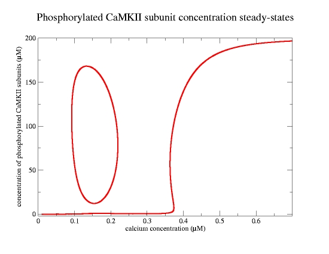

This is the readme for the model associated with the paper: Graupner M, Brunel N (2007) STDP in a bistable synapse model based on CaMKII and associated signaling pathways. PLoS Comput Biol 3:e221 Abstract: The calcium/calmodulin-dependent protein kinase II (CaMKII) plays a key role in the induction of long-term postsynaptic modifications following calcium entry. Experiments suggest that these long-term synaptic changes are all-or-none switch-like events between discrete states. The biochemical network involving CaMKII and its regulating protein signaling cascade has been hypothesized to durably maintain the evoked synaptic state in the form of a bistable switch. However, it is still unclear whether experimental LTP/LTD protocols lead to corresponding transitions between the two states in realistic models of such a network. We present a detailed biochemical model of the CaMKII autophosphorylation and the protein signaling cascade governing the CaMKII dephosphorylation. As previously shown, two stable states of the CaMKII phosphorylation level exist at resting intracellular calcium concentration, and high calcium transients can switch the system from the weakly phosphorylated (DOWN) to the highly phosphorylated (UP) state of the CaMKII (similar to a LTP event). We show here that increased CaMKII dephosphorylation activity at intermediate Ca(2+) concentrations can lead to switching from the UP to the DOWN state (similar to a LTD event). This can be achieved if protein phosphatase activity promoting CaMKII dephosphorylation activates at lower Ca(2+) levels than kinase activity. Finally, it is shown that the CaMKII system can qualitatively reproduce results of plasticity outcomes in response to spike-timing dependent plasticity (STDP) and presynaptic stimulation protocols. This shows that the CaMKII protein network can account for both induction, through LTP/LTD-like transitions, and storage, due to its bistability, of synaptic changes. Usage notes: Please note that this (ode) file allows to compute the steady-states of the CaMKII phosphorylation level with respect to calicum. The parameter used here allow to reproduce the data shown in Fig.3C by the blue line (p.2303) in the above mentioned paper. The steady-state diagram consits of two separate branches which have to be computed separately. This is the case since the initial point (specified by 'init' in the .ode files) has to be a fixed point on the respective branch. Two files are provided to compute the upper (including the UP state) and the lower (including the DOWN state) branch. The computation starts at Ca_0 = 0.2 \mu M for the former and at Ca_0 = 0.01 \mu M for the latter. Note however that all the dynamic simulations were not done with xppaut. The dynamics of the CaMKII-system has been implemented in a C++ code. Please contact the authors for further informations. both files are set to run: 1. start xppaut and load file $ xppaut 2. lauch auto click -> File -> AUTO 3. run auto click -> Run -> Steady State and you will get the fix-points of the system with the bistability (see ode file for more usage information).  This model was submitted by Dr. Graupner.